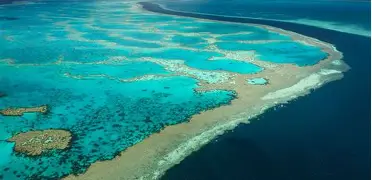

Great Barrier Reef, Australië

Het Great Barrier Reef is 's werelds grootste koraalrif en strekt zich uit over meer dan 2.300 kilometer langs de kust van Queensland. Duikers worden getrakteerd op een spectaculaire onderwaterwereld vol kleurrijk koraal, tropische vissen, schildpadden en zelfs manta's en haaien. Het rif biedt duikplekken voor zowel beginners als ervaren duikers. Met heldere wateren en uitstekende zichtbaarheid is het een van de meest iconische en adembenemende duikbestemmingen ter wereld. Het rif speelt een belangrijke rol in het wereldwijde mariene leven. Het rif trekt niet alleen duikers, maar ook wetenschappers en natuurliefhebbers. Het herbergt zeeschildpadden, kleurrijke koraalformaties en honderden vissoorten. Daarnaast is het een UNESCO-werelderfgoed.
Blue Hole, Belize

Het Blue Hole is een indrukwekkend onderwaterfenomeen in de Caraïben, bekend om zijn diepe, cirkelvormige structuur en verticale wanden. Dit natuurlijke sinkhole biedt duikers een unieke ervaring met kristalhelder water en indrukwekkende stalactieten die duizenden jaren oud zijn. Het is vooral populair bij ervaren duikers vanwege de diepte van meer dan 120 meter.
Raja Ampat, Indonesië

Raja Ampat is een van de meest biodiverse zeegebieden op aarde en ligt in het hart van de Indonesische archipel. De wateren rondom de eilanden herbergen duizenden soorten vissen en kleurrijk koraal. Duikers ontdekken er dramatische koraalformaties, mangroves en ongerepte riffen. Helder water en een overvloed aan onderwaterleven maken het ideaal voor fotografie en snorkelen.
Silfra, IJsland
Silfra is een unieke duik- en snorkellocatie in IJsland, gelegen tussen de Noord-Amerikaanse en Euraziatische tektonische platen. Het ijskoude, kristalheldere water biedt zicht tot wel 100 meter. Duikers ervaren hier het bijzondere gevoel van zweven tussen twee continenten, omringd door rotsformaties en helderblauw water.
Sipadan, Maleisië
Sipadan staat bekend om zijn rijke biodiversiteit, waaronder haaien, schildpadden en kleurrijke koraalriffen, en trekt duikers van over de hele wereld.